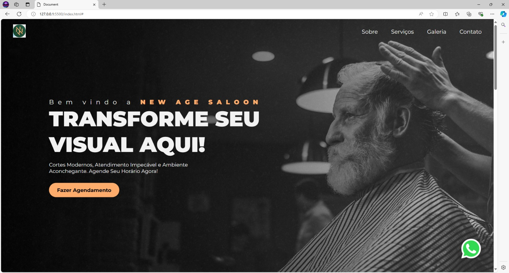
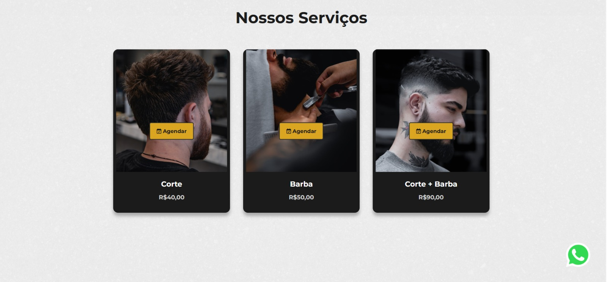

Projeto: Barbearia
O projeto do site da barbearia foi desenvolvido com o objetivo de oferecer praticidade e modernidade aos clientes. Através dele, é possível conhecer os serviços disponíveis, agendar horários de forma rápida e segura, além de visualizar informações sobre a equipe e promoções. O design foi pensado para transmitir elegância e confiança, utilizando cores que refletem a identidade da barbearia e garantindo uma navegação simples e intuitiva.
Tecnologias Utilizadas
- HTML5
- CSS3
- JavaScript
- Figma (para design)
- MySql
Links do Projeto
Minha Participação
Fui responsável pela criação das páginas principais (Home, Agendamento e Equipe), definição das cores, estilização dos botões e menus com CSS, e integração dos formulários de agendamento.
Screenshots

